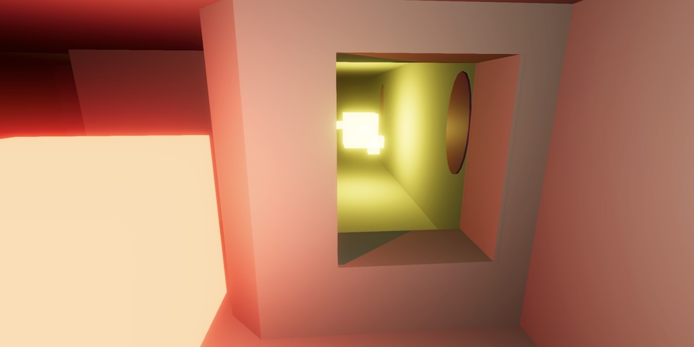
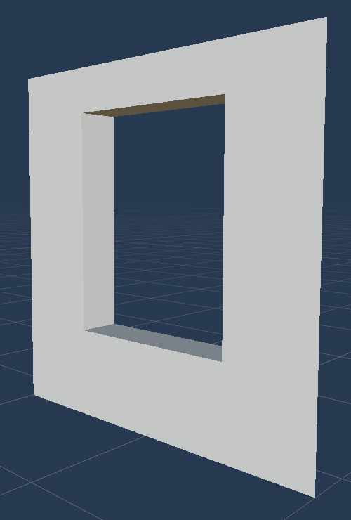
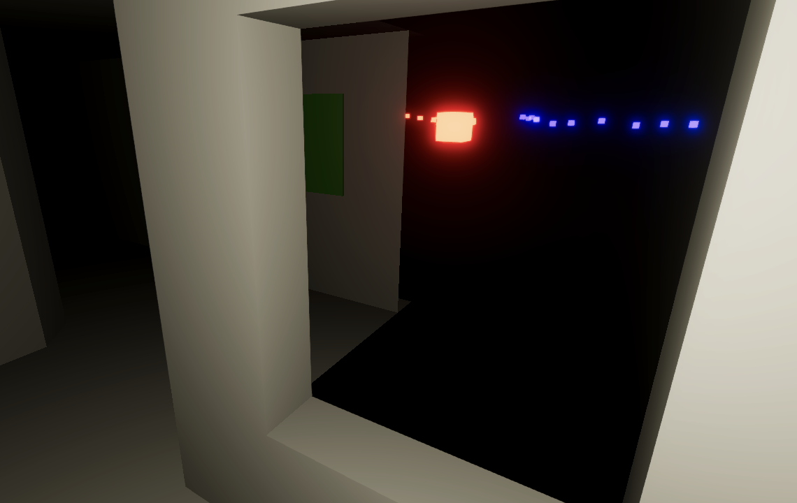
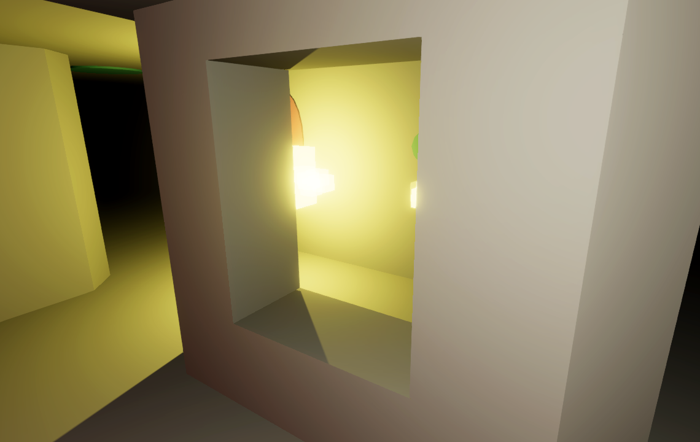

Maze 5.1.0
Windows

This tutorial is made with Unity 6000.1.12f1 and follows Maze 5.0.0.
Separate Visibility Data
This time we're going to upgrade our maze so its walls can contain windows. These will be internal windows only, there won't be windows on the outside edge of the maze.
If a wall in the maze has a window we can look through it even though there is no passage. This means that visibility has to be decoupled from passages. We can no longer rely on the passage data of the maze and have to add separate visibility data. Fortunately we still have plenty of bits of MazeFlags available to store the visibility data.
First, let's add a bit mask for all passage flags, which are both the straight and diagonal flags.
PassagesDiagonal = 0b1111_0000, PassageFlags = 0b1111_1111,
Then add flags for straight and diagonal visibility, matching the passage flags but shifted 16 bits to the left. Also include a mask for all of them.
VisibleToAll = 0b1111_0000_0000_0000, VisibilityN = 0b0001_0000_0000_0000_0000, VisibilityE = 0b0010_0000_0000_0000_0000, VisibilityS = 0b0100_0000_0000_0000_0000, VisibilityW = 0b1000_0000_0000_0000_0000, VisibilityNE = 0b0001_0000_0000_0000_0000_0000, VisibilitySE = 0b0010_0000_0000_0000_0000_0000, VisibilitySW = 0b0100_0000_0000_0000_0000_0000, VisibilityNW = 0b1000_0000_0000_0000_0000_0000, VisibilityFlags = 0b1111_1111_0000_0000_0000_0000
To facilitate conversion from passage to visibility flags add a PassagesAsVisibility method that extracts the passage bits and shifts them to the visibility bits.
public static MazeFlags PassagesAsVisibility(this MazeFlags flags)
{
var bits = (int)(flags & MazeFlags.PassageFlags);
bits <<= 16;
return (MazeFlags)bits;
}
Then create a DetermineVisibilityJob job that use the new method to determine the visibility of each cell based on its passages.
using Unity.Burst;
using Unity.Jobs;
[BurstCompile]
public struct DetermineVisibilityJob : IJobFor
{
public Maze maze;
public void Execute(int i)
{
MazeFlags cell = maze[i];
cell |= cell.PassagesAsVisibility();
maze[i] = cell;
}
}
We have to schedule this job in Game.StartNewGame after diagonal passages have been found. Let's first restructure the job-scheduling code so it's no longer nested and we get a hold of the job handle.
//new FindDiagonalPassagesJob//{//maze = maze//}.ScheduleParallel(//maze.Length, maze.SizeEW, new GenerateMazeJob//{ … }.Schedule()).Complete();JobHandle handle = new GenerateMazeJob { maze = maze, seed = seed != 0 ? seed : Random.Range(1, int.MaxValue), pickLastProbability = pickLastProbability, openDeadEndProbability = openDeadEndProbability, openArbitraryProbability = openArbitraryProbability, cutCornerProbability = cutCornerProbability }.Schedule(); handle = new FindDiagonalPassagesJob { maze = maze }.ScheduleParallel(maze.Length, maze.SizeEW, handle); handle.Complete();
Then schedule the DetermineVisibility job at the end.
handle = new FindDiagonalPassagesJob
{
maze = maze
}.ScheduleParallel(maze.Length, maze.SizeEW, handle);
handle = new DetermineVisibilityJob
{
maze = maze
}.ScheduleParallel(maze.Length, maze.SizeEW, handle);
handle.Complete();
The visibility data now mirrors the passage data. So can switch to using the visibility data by changing which flags we use in OcclusionJob.Quadrant. Replace all passage flags with their equivalent visibility flags.
public Quadrant(bool flipNS, bool flipEW)
{
this.flipNS = flipNS;
this.flipEW = flipEW;
north = flipNS ? MazeFlags.VisibilityS : MazeFlags.VisibilityN;
south = flipNS ? MazeFlags.VisibilityN : MazeFlags.VisibilityS;
east = flipEW ? MazeFlags.VisibilityW : MazeFlags.VisibilityE;
if (flipEW)
{
if (flipNS)
{
northwest = MazeFlags.VisibilitySE;
northeast = MazeFlags.VisibilitySW;
southeast = MazeFlags.VisibilityNW;
}
else
{
northwest = MazeFlags.VisibilityNE;
northeast = MazeFlags.VisibilityNW;
southeast = MazeFlags.VisibilitySW;
}
}
else if (flipNS)
{
northwest = MazeFlags.VisibilitySW;
northeast = MazeFlags.VisibilitySE;
southeast = MazeFlags.VisibilityNE;
}
else
{
northwest = MazeFlags.VisibilityNW;
northeast = MazeFlags.VisibilityNE;
southeast = MazeFlags.VisibilitySE;
}
}
Our visibility logic should still work the same as before, but visibility is now decoupled from the passages.
Generating Windows
To keep track of where the windows are we'll add flags for them to MazeFlags, along with a mask for all windows.
VisibilityFlags = 0b1111_1111_0000_0000_0000_0000, WindowN = 0b0001_0000_0000_0000_0000_0000_0000, WindowE = 0b0010_0000_0000_0000_0000_0000_0000, WindowS = 0b0100_0000_0000_0000_0000_0000_0000, WindowW = 0b1000_0000_0000_0000_0000_0000_0000, WindowFlags = 0b1111_0000_0000_0000_0000_0000_0000
We add the windows in GenerateMazeJob. Give it a field to control the window probability.
public float pickLastProbability, openDeadEndProbability, openArbitraryProbability, cutCornerProbability, windowProbability;
Create an AddWindows method like the other methods that add extra things to the maze. In this case we're interested in the inner wall segments of the maze, so the cell edges instead of the cells themselves. We'll visit them be looping through the maze grid using cell coordinates, skipping the first one in both dimensions.
Random AddWindows(Random random)
int2 coords;
for (coords.y = 1; coords.y < maze.SizeNS; coords.y++)
{
for (coords.x = 1; coords.x < maze.SizeEW; coords.x++)
{
int index = maze.CoordinatesToIndex(coords);
MazeFlags cell = maze[index];
}
}
return random;
}
This guarantees that each visited cell has a south and west neighbor. Check if there isn't a west passage because that means that there is a west wall. If this is the case, and we randomly decide to place a window, then set the west window flag. We also have to set the east window flag of the west neighbor cell so the window exists on both sides of the wall.
MazeFlags cell = maze[index];
if (cell.HasNot(MazeFlags.PassageW) &&
random.NextFloat() < windowProbability)
{
maze.Set(index, MazeFlags.WindowW);
maze.Set(index + maze.StepW, MazeFlags.WindowE);
}
Using the same approach we can also randomly insert a window in the south wall, if it exists.
if (cell.HasNot(MazeFlags.PassageW) &&
random.NextFloat() < windowProbability)
{
maze.Set(index, MazeFlags.WindowW);
maze.Set(index + maze.StepW, MazeFlags.WindowE);
}
if (cell.HasNot(MazeFlags.PassageS) &&
random.NextFloat() < windowProbability)
{
maze.Set(index, MazeFlags.WindowS);
maze.Set(index + maze.StepS, MazeFlags.WindowN);
}
Invoke this method at the end of Execute.
if (cutCornerProbability > 0f)
{
random = CutCorners(random);
}
if (windowProbability > 0f)
{
random = AddWindows(random);
}
Finally, add a configuration field for the window probability to Game and pass it to GenerateMazeJob. We don't want too many windows, so let's use 0.2 for its default value.
float
pickLastProbability = 0.5f,
openDeadEndProbability = 0.5f,
openArbitraryProbability = 0.5f,
cutCornerProbability = 0.5f,
windowProbability = 0.2f;
…
void StartNewGame()
{
…
new FindDiagonalPassagesJob
{
maze = maze
}.ScheduleParallel(
maze.Length, maze.SizeEW, new GenerateMazeJob
{
maze = maze,
seed = seed != 0 ? seed : Random.Range€(1, int.MaxValue),
pickLastProbability = pickLastProbability,
openDeadEndProbability = openDeadEndProbability,
openArbitraryProbability = openArbitraryProbability,
cutCornerProbability = cutCornerProbability,
windowProbability = windowProbability
}.Schedule()).Complete();
…
}
Our maze will now contain windows, even though they aren't visible yet.
Showing Windows
What's left to do is create a wall variant with a window in it. Duplicate the Wall prefab and name it Windowed Wall. Adjust and duplicate its quad so we end up with a wall that has a rectangular hole in it. The exact shape of the window doesn't matter, as long as it stays from the sides of the wall so it won't end up clipping into an adjacent orthogonal wall. The visibility algorithm treats the wall as fully open, regardless how much of the wall actually blocks vision.
Add four more quads to fill in the edges of the wall around the window. These quads must have a width of 0.25 and a Z position of 0.875. Note that these edges fill the space from the wall face to the edge of the cell, so visually the edge will appear twice as thick as it appears in the prefab editor. I also removed the colliders from the inner edges, as the player should never collide with them.

Add a configuration field for the windowed wall prefab to MazeCellBuilder and hook it up.
MazeCellObject cell, floor, ceiling, wall, windowedWall, cornerCut, cornerFull;
Now the BuildWall method needs to know whether the wall it's creating has a window in it. Add a parameter for this so it can instantiate the appropriate prefab. Also, let's only add ornaments to walls without windows, so they won't end up hanging in front of the windows.
void BuildWall(Transform parent, int rotation, bool hasWindow)
{
MazeCellObject w = (hasWindow ? windowedWall : wall).GetInstance();
w.transform.localRotation = rotations[rotation];
w.transform.SetParent(parent, false);
if (!hasWindow && Random.value < wallOrnamentProbability)
{
MazeCellObject o = wallOrnaments[
Random.Range(0, wallOrnaments.Length)].GetInstance();
o.transform.localRotation = rotations[rotation];
o.transform.SetParent(parent, false);
}
}
Now BuildCell has to indicate whether each wall has a window in it.
if (wallN)
{
BuildWall(t, 0, f.Has(MazeFlags.WindowN));
}
if (wallE)
{
BuildWall(t, 1, f.Has(MazeFlags.WindowE));
}
if (wallS)
{
BuildWall(t, 2, f.Has(MazeFlags.WindowS));
}
if (wallW)
{
BuildWall(t, 3, f.Has(MazeFlags.WindowW));
}

Looking Through Windows
We can now see the windows in the maze. But visibility doesn't take them into account yet, so what's visible through the windows is likely wrong. We end up seeing through holes in the maze because some cells will be incorrectly hidden. To address this we add a WindowsAsVisibility method to MazeFlags, which reinterprets the window flags as straight visibility flags, by shifting them eight bits to the right.
public static MazeFlags WindowsAsVisibility(this MazeFlags flags)
{
var bits = (int)(flags & MazeFlags.WindowFlags);
bits >>= 8;
return (MazeFlags)bits;
}
Use this method to combine the passage and window visibility in DetermineVisibilityJob
public void Execute(int i)
{
MazeFlags cell = maze[i];
cell |= cell.PassagesAsVisibility();
cell |= cell.WindowsAsVisibility();
maze[i] = cell;
}

Our maze now has functional windows, which makes it a bit easier to navigate as we have more visual information to work with. We can spot enemy agents and the goal earlier so we know where to go. Of course we could also end up in a dead end with a window, seeing the goal without an obvious way to reach it.
license repository PDF